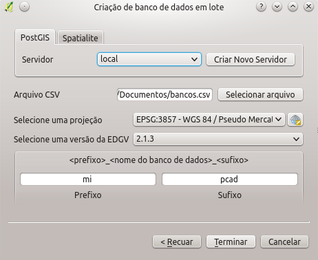
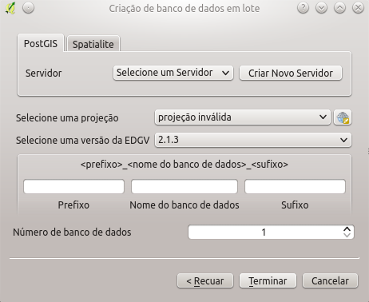
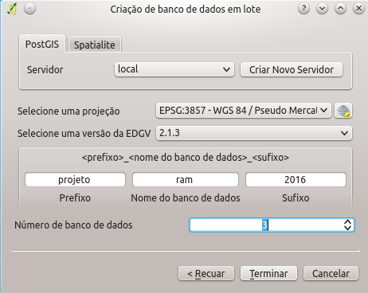

Visando os grandes produtores de geoinformação o DSGTools permite agora a criação de bancos de dados em lote, como se pode ver na figura abaixo, facilitando a criação de bancos para grandes projetos.
Existem duas opções para criação de bancos em lote, elas são abordadas nos itens a seguir.
A criação de bancos com esta opção é feita com a seleção de um arquivo csv com os nomes dos bancos que serão criados, seleção de um sistema de referência espacial, seleção da versão da EDGV e com as definições de sufixo e prefixo. A figura abaixo mostra o estado inicial do diálogo.

O arquivo com os nomes dos bancos deve ser possuir um nome de banco por linha, como no exemplo abaixo:
2215
2216
2217
.
.
A figura abaixo mostra um exemplo de seleção de parâmetros para criação de bancos.

A criação de bancos com esta opção é feita com a seleção do número de bancos que se deseja criar, seleção de um sistema de referência espacial, seleção da versão da EDGV e com as definições de sufixo, nome base e prefixo. A figura abaixo mostra o estado inicial do diálogo.

A figura mostra um exemplo de seleção de parâmetros para a criação dos bancos de dados.
